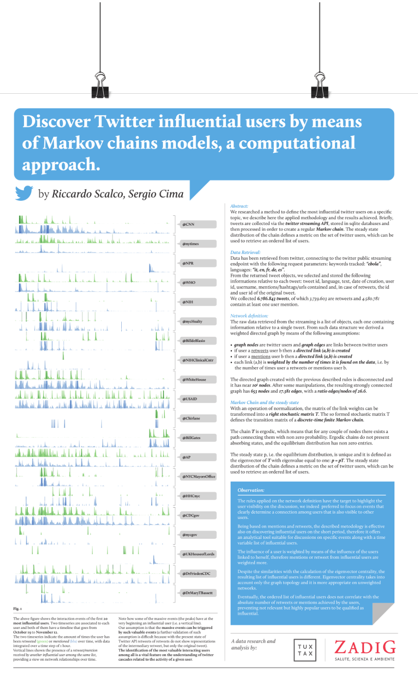

    <article>
      <div class="container">
        <h1>Tellme: discover Twitter influential users by means of Markov chains models</h1>
        <p>
          We researched a method to define the most influential twitter users on a specific topic. Briefly, tweets are collected via the twitter streaming API, stored in sqlite databases and then processed in order to create a regular Markov chain. The steady state distribution of the chain defines a metric on the set of twitter users, which can be used to retrieve an ordered list of users.
        </p>
        <p>
          The rules applied on the network definition have the target to highlight the user visibility on the discussion, we indeed  preferred to focus on events that clearly determine a connection among users that is also visible to other users.
        </p>
        <p>
          Being based on mentions and retweets, the described metodology is effective also on discovering influential users on the short period, therefore it offers an analytical tool suitable for discussions on specific events along with a time variable list of influential users.
        </p>
        <p>
          The mathematical methods are based on the paper <a href="http://www.biochem-caflisch.uzh.ch/static/pdf/riccardos11.pdf">Equilibrium distribution from distributed computing</a>, and we used the <a href="https://github.com/riccardoscalco/Pykov">Pykov</a> for creating finite regular Markov chains.
        </p>
        <p>
          The project has been requested by the <a href="http://en.zadig.it/">Zadig</a> editorial company and it falls under the <a href="http://tellmeproject.eu/">tellme project</a>. The project has been developed in collaboration with Sergio Cima (Tuxtax).
        </p>
        <p>
          Have a look at the <a href="../assets/Zadig_MarkovTwitter_research.pdf
          ">poster</a>.
        </p>
      </div>
      
    </article>
